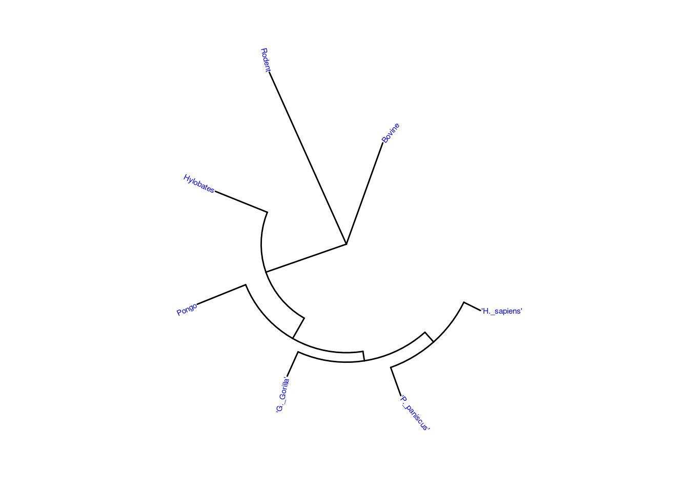

#install.packages("ape")
#if (!require("BiocManager", quietly = TRUE))
#install.packages("BiocManager")
#BiocManager::install("treeio")
#if (!require("BiocManager", quietly = TRUE))
# install.packages("BiocManager")
#BiocManager::install("ggtree")
#if (!require("BiocManager", quietly = TRUE))
#install.packages("BiocManager")
#BiocManager::install("SGSeq")Creating the tree from mammal phylogeny from a dataset in R Bioinformatics Cookbook.
library(rbioinfcookbook)
#library(SGSeq)
library(ape)
library(treeio)treeio v1.30.0 Learn more at https://yulab-smu.top/contribution-tree-data/
Please cite:
LG Wang, TTY Lam, S Xu, Z Dai, L Zhou, T Feng, P Guo, CW Dunn, BR
Jones, T Bradley, H Zhu, Y Guan, Y Jiang, G Yu. treeio: an R package
for phylogenetic tree input and output with richly annotated and
associated data. Molecular Biology and Evolution. 2020, 37(2):599-603.
doi: 10.1093/molbev/msz240library(ggplot2)
library(ggtree)ggtree v3.14.0 Learn more at https://yulab-smu.top/contribution-tree-data/
Please cite:
Guangchuang Yu, David Smith, Huachen Zhu, Yi Guan, Tommy Tsan-Yuk Lam.
ggtree: an R package for visualization and annotation of phylogenetic
trees with their covariates and other associated data. Methods in
Ecology and Evolution. 2017, 8(1):28-36. doi:10.1111/2041-210X.12628
Attaching package: 'ggtree'The following object is masked from 'package:ape':
rotateggtree is used to visualize evolutionary trees.
newick_file_path <- fs::path_package("extdata", "mammal_tree.nwk", package = "rbioinfcookbook" )
nexus_file_path <- fs::path_package("extdata", "mammal_tree.nexus", package = "rbioinfcookbook")
newick <- ape::read.tree(newick_file_path)
nexus <- ape::read.nexus(nexus_file_path)Newick: creates evolutionary trees in text format.
Nexus: also creates evolutionary trees in text format but adds DNA sequences or traits in the tree.
Both Newick and Nexus fall under the ape package.
beast_file_path <- fs::path_package("extdata", "beast_mcc.tree", package = "rbioinfcookbook")
raxml_file_path <- fs::path_package("extdata", "RAxML_bipartitionsBranchLabels.H3", package = "rbioinfcookbook")
beast <- read.beast(beast_file_path)
raxml <- read.raxml(raxml_file_path)This is the different package called treeio that has two different formats called BEAST and RAxML that is also used to create evolutionary trees.
BEAST: uses Bayesian method to include different rates of evolution.
RAxML: used for phylogenetic analysis of large datasets. It uses maximum likelihood which is the statistical technique used to find the best value for the evolutionary trees.
class(newick)[1] "phylo"class(nexus)[1] "phylo"class(beast)[1] "treedata"
attr(,"package")
[1] "tidytree"class(raxml)[1] "treedata"
attr(,"package")
[1] "tidytree"beast_phylo <- treeio::as.phylo(beast)
newick_tidytree <- treeio::as.treedata(newick)treeio::write.beast(newick_tidytree, file = "mammal_tree.beast")
ape::write.nexus(beast_phylo, file = "beast_mcc.nexus")tree_file <- fs::path_package("extdata", "itol.nwk", package = "rbioinfcookbook")
itol<- ape::read.tree(tree_file)ggtree(itol)ggtree(itol) +
geom_tiplab(color = "blue", size = 1)Using ggtree to add labels to the evolutionary tree.
ggtree(itol, layout = "circular") +
geom_tiplab(color = "blue", size = 2)By adding a circular layout in the already existing code above, we made the change in how the evolutionary tree could be read.
ggtree(itol, layout = "circular") +
geom_tiplab(color = "blue", size = 2) +
geom_strip(13, 14, color = "red", barsize = 1)Using the color to highlight the particular clade.
ggtree(itol) +
coord_flip() +
scale_x_reverse()The same evolutionary tree could be invereted and read in a different format.
ggtree(itol, layout = "unrooted")"daylight" method was used as default layout for unrooted tree.Average angle change [1] 0.174910612627282Average angle change [2] 0.161645191380673Average angle change [3] 0.129304375923319Average angle change [4] 0.0825706767962636Average angle change [5] 0.100056259084497mammal_file <- fs::path_package("extdata", "mammal_tree.nwk", package = "rbioinfcookbook" )
mammal<- ape::read.tree(mammal_file)ggtree(mammal) +
geom_tiplab(color = "blue", size = 2)ggtree(mammal, layout = "circular") +
geom_tiplab(color = "blue", size = 2)
ggtree is used to create the tree from mammal phylogeny.